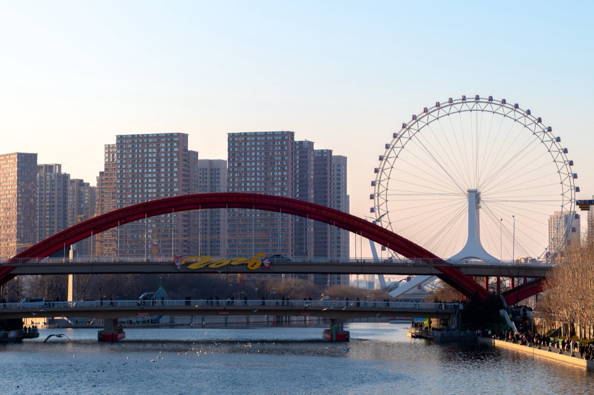
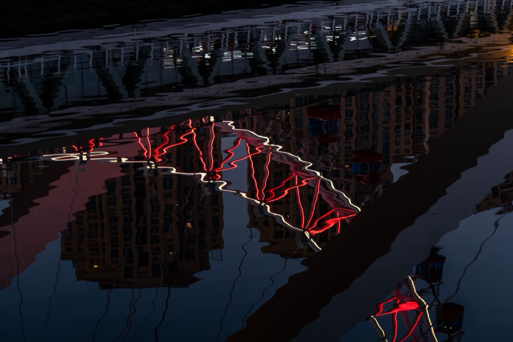
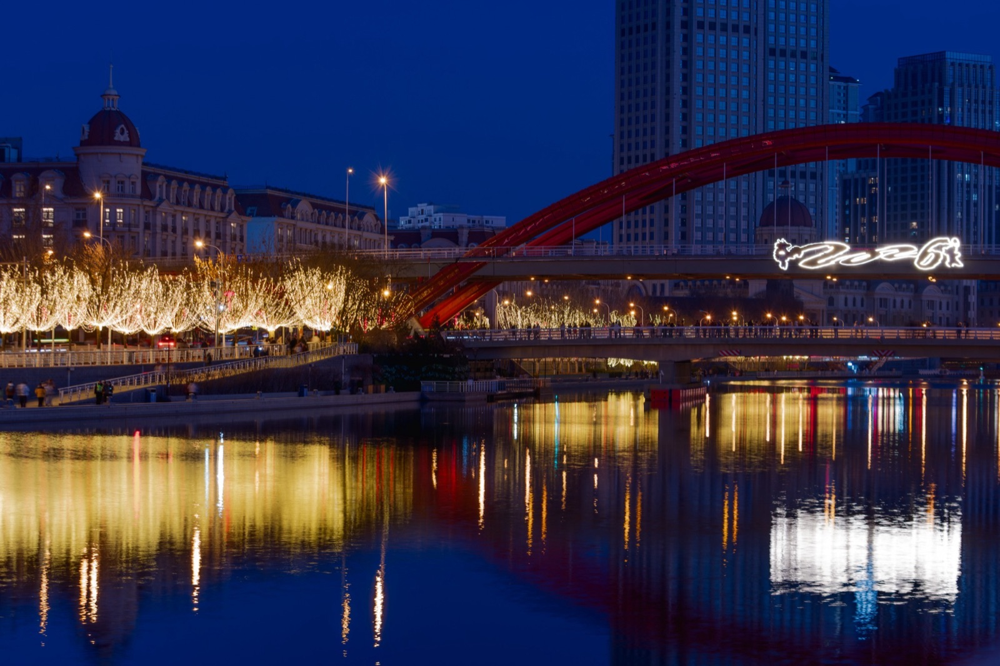

天津
1 个故事 · 21 张照片 · 刚刚编辑进入城市 →
以城市为线索，收纳照片、随笔与时间。每一段故事由多个可阅读、可播放的页面组成。

海河穿过夜色，桥与钟把行走的路线留在水面。这里收录在天津拍下的一个完整故事。
从黄昏走到午夜。没有赶路，只沿着海河看桥灯亮起，看城市在水里出现另一遍。
选择构成这个故事的照片，之后仍然可以继续添加。
示例流程 · 使用 21 张天津照片 · 不会上传
支持 JPG、PNG、HEIC


傍晚沿着海河慢慢走，天色比想象中暗得更快。 桥上的灯亮起来以后，水面把整座城市重新画了一遍。 我们没有急着去下一处，只在风里站了一会儿。
21:56 海河 · 天津